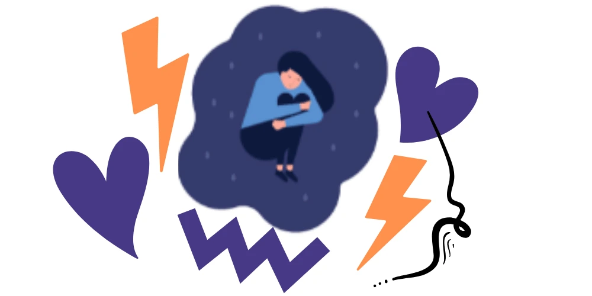
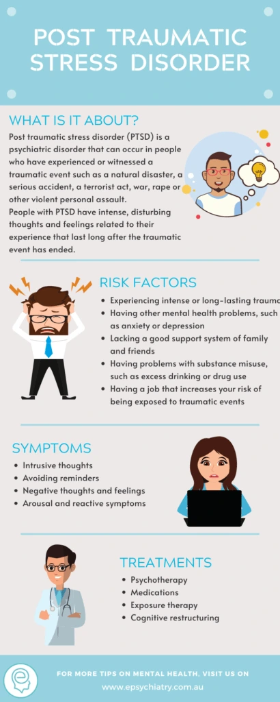
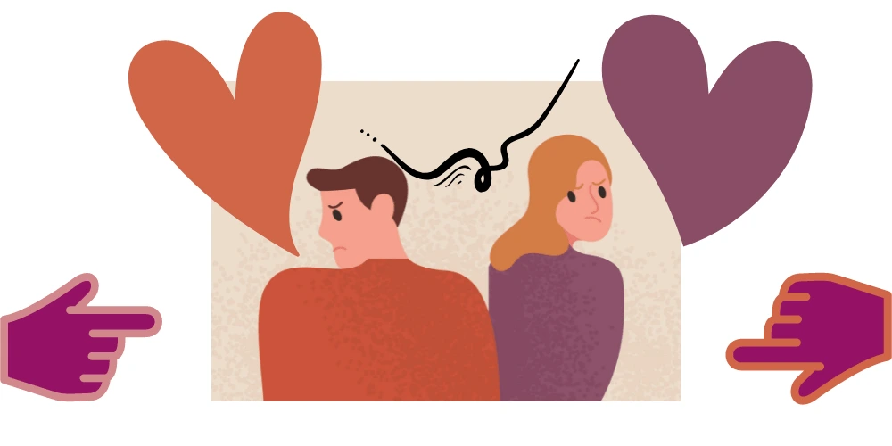

Post-traumatic stress disorder (PTSD) is a type of disorder that causes intense anxiety. This intense anxiety felt by PTSD victims most likely roots in a traumatic event. A traumatic event may be an experience that has caused great fear, loss, or despair, such as a natural disaster or a car accident. A closely related disorder called complex post-traumatic stress disorder (also known as C-PTSD) is gaining wide recognition by medical professionals in recent years. While PTSD is the result of a traumatic event, Complex PTSD is the result of repeated trauma that a person suffers for a longer period of time, over months and even years as opposed to a single traumatic event. This article contains help to complex PTSD, Symptoms, causes, assessments and treatment.

Symptoms of PTSD
It is not unusual to see the presence of PTSD symptoms during a mental health assessment. Here are a few symptoms that mental health care professionals look to help complex PTSD and when diagnosing:

- A continuous re-experience and recall of traumatic experiences may include flashbacks or nightmares.
- People with PTSD avoid certain situations, especially those that trigger a recall of events that has caused distress and anxiety.
- Avoiding people and relationships due to distrust.
- There is the presence of hyperarousal is a classic symptom of PTSD. This prevents a person from getting a good night’s rest, they startle easily and feel on edge. Concentration is very difficult. Loud or unexpected noises trigger an unsettling feeling of fear.
Symptoms of C-PTSD
If left untreated, people with repeated trauma may eventually develop signs of Complex PTSD. This is mostly true for those who do not seek help for complex PTSD. If left untreated, any underlying emotional distress alongside repeated trauma can lead to C-PTSD. Here are a few signs of a person that may have C-PTSD:
- For those who may have CPTSD, emotional regulation becomes impaired. Feelings become uncontrollable such as impulsiveness, explosive burst of anger, long periods of sadness, and depression.
- Dissociation is present, which means a person detaches from their surroundings.
- An endless feeling of shame or guilt is apparent to a person who suffers from C-PTSD. They feel completely out of touch with people. They end up feeling alone.
- Healthy relationships are hard to maintain or keep due to mistrust of feelings. Hence, for those with CPTSD, interaction with others may be completely halted. Thereafter, isolation follows. Therefore, if relationships are becoming strained, Complex PTSD treatment is recommended.
- Revenge may pre-occupy a person who suffers from C-PTSD. Either that or completely succumbing to an abuser, giving complete control or manipulation to the abuser.
- A strong sense of despair sets in causing loss of self-belief, or motivation.
What causes Complex PTSD
How traumatic stress impacts the brain is still under study. To date, researchers are still studying what leads to conditions like C-PTSD. Studies and Complex PTSD tests were done on animals show that trauma does have a long-lasting effect on the brain. When a person goes through extreme trauma, some parts of the brain become affected. The affected parts are the amygdala, hippocampus, and prefrontal complex. These parts of the brain play a big role in a person’s memory function and responses to stress.
Any type of long term trauma that lasts over a few months or even years may lead to CPTSD. People who have been abused by a trusted person, may it be a caregiver or a protector are also prone to developing C-PTSD. An example of such is a victim of child trafficking, sexual abuse by a relative, prisoner of war, living in areas with ongoing long-term conflict, or childhood neglect. A complex PTSD test is recommended when trying to find the root cause of the problem.
Are you prone to Complex PTSD?
Research and study have been done into underlying causes of PTSD. Less study has been done on c-PTSD. We can draw inferences about complex PTSD from what we know about PTSD. Here’s what to watch out for:
- There is a family history or underlying mental illness such as anxiety and depression.
- There is an inherited personality trait, anxious temperament included.
- How a person’s brain regulates responses to stress is also a factor, taking into consideration hormones and neurochemicals in the brain during duress.
- Not having a strong support system can also play a huge role in bringing to the surface Complex PTSD symptoms.
Diagnosis for Complex PTSD
Considered a relatively new condition, Complex PTSD may be challenging to diagnose or help as opposed to PTSD. Mental health care professionals ask patients to keep a log or a diary to trace and track any signs of Complex PTSD. Mental health care professionals do not necessarily have a tool or questionnaire that they use when assessing for Complex PTSD symptoms. However, keeping a detailed diary of symptoms as they occur can help a doctor make an accurate diagnosis.
What to expect during a Complex PTSD assessment?
During the first visit, recall of tragic or traumatic events can be expected. This is often true during the initial diagnosis of a Complex PTSD test with a mental health care professional’s help. Though this may cause great distress, this information is vital. However, it is not always needed in the first session. Please discuss with your mental health professional, they will be able to go over it later on if that would be more helpful. Other risk factors will also be discussed. This discussion will include a person’s family history and their own mental health history. Whether it be prescribed or bought over the counter, medications taken will be taken into account. Please have with you a list of your tablets. Furthermore, your clinician will want to know if you drink alcohol or use any other substances.

If there are any additional symptoms that are external to the Complex PTSD test, these too will be taken into account and considered.
Any ongoing relationship problems will also be looked into as this is one of the classic signs of Complex PTSD. Troubles in ongoing relationships or emotional lability can then lead to the possibility of the existence of C-PTSD.
What are the Treatments available for Complex PTSD
Several Complex PTSD treatment options are available for those who suffer from C-PTSD. These treatment options can and may reduce symptoms, allowing a person to manage or help his/her daily struggles due to Complex PTSD. Options for treatment may be one of the following:
1. Psychotherapy
- It is an option for Complex PTSD treatment. Psychotherapy is a form of talking therapy that you do with a counsellor or a psychologist. Therapy can be both short term and long term.
- During psychotherapy, Cognitive-behavioral therapy (CBT) strategies may also be used. CBT allows a person to identify any negative thoughts and challenge them. A process, sometimes known as cognitive restructuring, CBT can help with anxiety and stress management.
2. Eye Movement Desensitization and Reprocessing (EMDR)
This is a common tool to treat PTSD. It can also help those who suffer from C-PTSD. A person is asked to recall a traumatic experience as their vision directed to move from side to side. Another option or technique used is having someone tap on a person’s hand during a recall as opposed to moving the eyes. This technique helps a person desensitize any traumatic memories or thoughts.
3. Medication
- This is often an option for those who suffer from depression and anxiety. It can help treat a person with PTSD and Complex PTSD. Some of the more common medications used for PTSD are paroxetine and mirtazapine, however, there are others used as well.
- It should be noted that the long-term use of medication is discouraged. Medication should only be used in the interim while a person learns and discovers other ways to cope with Complex PTSD.
Self-Help Tips to Combat C-PTSD
- Mindfulness – a person who suffers from C-PTSD can become a bit more mindful when they become more cognizant of their bodily sensations, thoughts, and feelings.
- Stay Active – physical activity can also become a source of happiness. It occupies the mind with positivity and allows relief from flashbacks of negativity and trauma.
- Pets – Cats and dogs can offer warmth through companionship. An animal can provide a calming effect for people with C-PTSD.
- Setting Boundaries – This is especially important for those who’ve suffered from relationship abuse, sexual assault, or domestic violence. Having personal space is very important for those who suffered at the hands of a trusted person or a loved one.
- Find Retreat – our home is normally where we find comfort, especially our bedroom where we find rest. Hence, a comfortable bed or bedroom brings calm, feels safe, and can help those who suffer from Complex PTSD symptoms to find tranquillity and peace.
Professional help
It is not impossible to recover from trauma. Winning against C-PTSD is possible. It will require a set of responses to traumatic experiences and develop a new sense of self post-trauma. It is possible to recover from C-PTSD. Recovery or help for complex PTSD can be achieved through therapy and treatment. The initial step is to acknowledge the trauma, talk about the trauma, get help, build self-compassion, learn how to deal with the memories of the trauma, and the emotional pain in a healthier way.
For those who cannot seem to find the strength to deal with their trauma and do not have support from friends and family, there is hope. Help is available. Take the first step towards recovery by visiting your family doctor. Acknowledge the trauma, talk about how it affects you, build a support network, learn how to deal with the emotional pain and the stress by allowing mental health care professionals to step in. Trauma should not consume us. Professional help is available. Speak with your GP when you next get the chance.